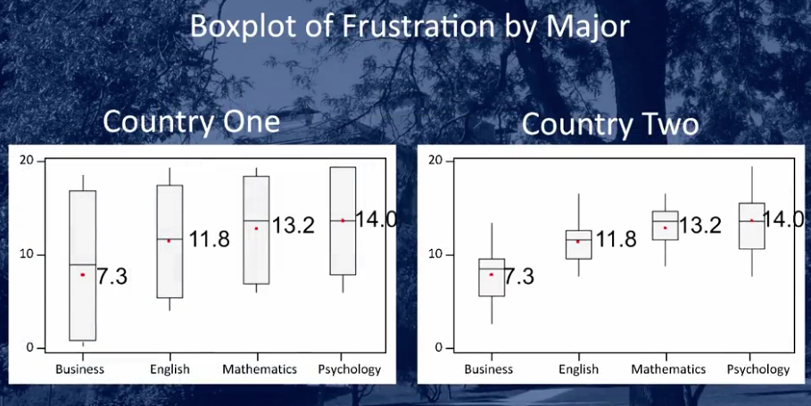
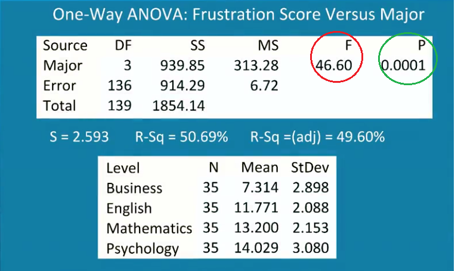
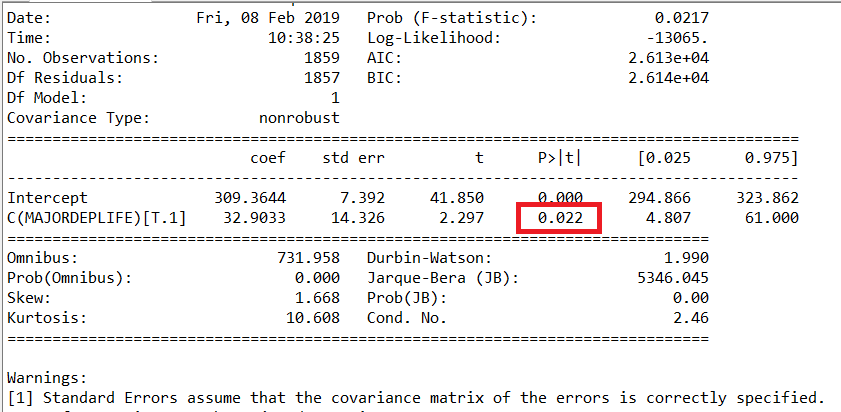
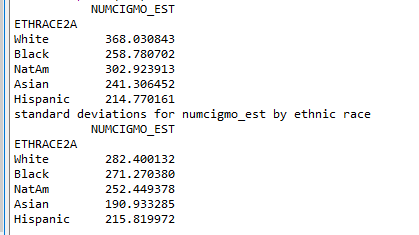
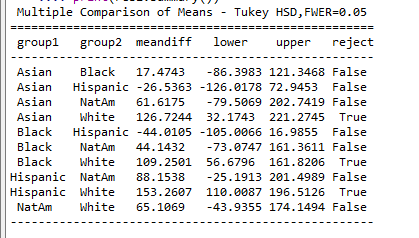

Choosing a statistical test
You will always be interpreting p values, regardless of the inferential test that you use. The specific statistical test that you use to evaluate your hypothesis, will depend on the type of explanatory and response variables that you have chosen.
Bivariate Statistical Tools:
If you have a categorical explanatory variable, and a quantitative response variable, you use: - ANOVA- analysis of variance
If you have a categorical explanatory variable, and a categorical response variable, you use: - X2 Chi-Square test of independence
If you have quantitative explanatory and response variables, you use: - r Correlation coefficient
If you have quantitative explanatory variable, and a categorical response variable you would recode the explanatory variable into two categories and then use the X2 Chi-Square test of independence.
A new relationship to test: Is academic frustration related to major?
It is believed that students with different majors may experience different levels of academic frustration. Random samples of 35 individuals, each of Business, English, Mathematics and Psychology majors were asked to rate their level of academic frustration, on a scales of one, the lowest, to twenty, the highest.
- Our explanatory variable X is the categorical variable Major type.
- Our response variable Y is the categorical variable academic frustration.
Both variables are categorical, we will be examining the mean academic frustration for each major, if they are all the same then this tells us there is no difference in the level of academic frustration for each major.
- Null hypothesis claims that there is no relationship between major and academic frustration.
- Alternate hypothesis claims that a relationship does exist.
F-Statistic
F = Variation among sample means / variation within groups
In this context, we look at the variation between the mean academic frustration for majors, divided by the variation within each majorsThis measures to what extent the difference between the majors dominates over the usual variation within a major. If the variation is large within a major, the differences between majors become negligible and there would be little evidence against the null hypothesis. If the variation is small within a major, the differences between majors become significant and there would be evidence to reject the null hypothesis.

This image shows a box plot for two populations, country one and country two. - This demonstrates the importance of understanding the differences between the majors, so you are not only comparing means, you must look at the variability, so spread and shape also. - Both countries show the exactly the same means for each major. - Country one has greater variability in the sample data for each major. - Country two has far less variability in the sample data for each major.
When we apply one-way Anova for country two testing the relationship between major and frustration score. The F statistic circled in red is 46.60. We know this is the variability among means divided by the variability within groups, this large number suggests the variability among means is much greater than that within the sample groups.

The P value of the ANOVA F Test is the probability of getting an F statistic as large as we got or even larger had the null hypothesis been true. In other words it tells us how surprising it is to find data like those observed. The p value is almost zero, telling us it would be next to impossible to get data like those observed had the mean frustration level of the four majors been the same. The P value tells us that we would incorrectly reject the null hypothesis one in ten thousand times. We will be correct in rejecting the null hypothesis 9999 times out of 10,000.
So we can confidently reject the null hypothesis, frustration level means of the four majors are not all the same.
Next you will test a hypothesis presented in the lecture.
Hypothesis testing
We are going to carry out hypothesis testing on the NESARC data.
We want to evaluate if there is an association between a diagnosis of major depression and how much a person smokes.
Step 1 : stating the hypotheses
Null hypothesis: There is no difference in smoking quantity between people with and without depression. Alternate hypothesis: There is a difference in smoking quantity between people with and without depression.
The explanatory variable here is the existance of major depression (MAJORDEPLIFE), it is a categorical variable with two values, yes or no (1,0) The response variable here is the number of cigarettes smoked (NUMCIGMO_EST), it is a numerical variable ranging from 1 to 2940.
Step 2 : Choose Sample
We are going to test the hypotheses among individuals who are smokers and who are between 18 and 26. The sample size should be 1706.
Create a new lab06.py file in spyder, reuse the necessary code from previous labs so that you:
- import the necessary libraries numpy and pandas
- load the data from csv file
- replace any ' ' spaces with Nan for CHECK321, S3AQ3B1 and S3AQ3C1.
- convert CHECK321, S3AQ3B1 and S3AQ3C1 to numeric the variables
- create a copy of the dataset and call it sub1.
- limit the rows in sub1 to those smokers between the ages of 18 and 26.
- set missing numerical data to NaN (any 9 or 99 for variables S3AQ3B1 and S3AQ3C1)
- create a dictionary for recoding that maps the number of days in the month so that those that answered 1 for daily smoker (S3AQ3B1) now show 30, those that choose 2 now show 22 and so on (as you did in lab3).
- Create a secondary variable called NUMCIGMO_EST by multiplying USFREQMO and S3AQ3C1.
- Print out the groupby of NUMCIGMO_EST so that you can see how many people smoked for each value in the variable.
P-Value Statistical Significance
The reason for using an inferential test is to get a probability value (p-value). The p-value provides an estimate of how often we would get the obtained result by chance if in fact the null hypothesis is true.
In statistics a result is called statistically significant if it is unlikely to have occurred by chance alone. - the most commonly used standard or cut off is 0.05 or 5%. - this standard if called the significance level of a test and usually shown by the Greek letter alpha, alpha is said to be equal to 0.05. - if the p-value is small, less than 0.05, this suggests that it is more than 95% likely that the association of interest would be present following repeated samples drawn from the population. - this also means the data would be rare or surprising when the null hypothesis is true. - the data therefore provides significant evidence against the null hypothesis so we reject the null hypothesis and accept the alternate hypothesis. - the p-value is greater than alpha (0.05) then the data is not considered surprising enough when the null hypothesis is true. Therefore it does not provide enough evidence to reject the null hypothesis.
Your code should look something like this:
# -*- coding: utf-8 -*-
"""
Created on Tue Jan 29 14:02:12 2019
@author: BMULLALLY
"""
import numpy
import pandas
nesarc_data = pandas.read_csv('nesarc_pds.csv', low_memory=False)
#SETTING MISSING SPACES in TEXT DATA
nesarc_data['CHECK321']=nesarc_data['CHECK321'].replace(' ', numpy.nan)
nesarc_data['S3AQ3B1'] = nesarc_data['S3AQ3B1'].replace(' ', numpy.nan)
nesarc_data['S3AQ3C1'] = nesarc_data['S3AQ3C1'].replace(' ', numpy.nan)
#setting variables you will be working with to numeric
nesarc_data['CHECK321'] = pandas.to_numeric(nesarc_data['CHECK321'])
nesarc_data['S3AQ3B1'] = pandas.to_numeric(nesarc_data['S3AQ3B1'])
nesarc_data['S3AQ3C1'] = pandas.to_numeric(nesarc_data['S3AQ3C1'])
#subset data to young adults age 18 to 26 who have smoked in the past 12 months
sub1 = nesarc_data.copy()
sub1 = sub1[(sub1['AGE']>=18) & (sub1['AGE']<=26) & (sub1['CHECK321']==1)]
#SETTING MISSING NUMERICAL DATA
sub1['S3AQ3B1']=sub1['S3AQ3B1'].replace(9, numpy.nan)
sub1['S3AQ3C1']=sub1['S3AQ3C1'].replace(99, numpy.nan)
#recoding number of days smoked in the past month
recode1 = {1: 30, 2: 22, 3: 14, 4: 5, 5: 2.5, 6: 1}
sub1['USFREQMO']= sub1['S3AQ3B1'].map(recode1)
#test that the maping took place
output = sub1[['S3AQ3B1','USFREQMO']]
print(output)
# Create a secondary variable multiplying the days smoked/month and the number of cig/per day
sub1['NUMCIGMO_EST']=sub1['USFREQMO'] * sub1['S3AQ3C1']
print(sub1['NUMCIGMO_EST'])
ct1 = sub1.groupby('NUMCIGMO_EST').size()
print (ct1)Now we want to calculate the p-value for our sample of 1859 observations, using NUMCIGMO_EST and MAJORDEPLIFE variables. First add the following import statement:
import statsmodels.formula.api as smfNext add the following :
# using OLS function for calculating the F-statistic and associated p value
model1 = smf.ols(formula='NUMCIGMO_EST ~ C(MAJORDEPLIFE)', data=sub1)
results1 = model1.fit()
print(results1.summary())
#calculate the means and standard deviations for monthly smoking for each category of MAJORDEPLIFE
print('means for numcigmo_est by major depression status')
#subset of only two variables.
sub2=sub1[['NUMCIGMO_EST', 'MAJORDEPLIFE']].dropna()
#Sample size
print(len(sub2))
m1=sub2.groupby('MAJORDEPLIFE').mean()
print(m1)
print('standard deviations for numcigmo_est by major depression status')
sd1 = sub2.groupby('MAJORDEPLIFE').std()
print(sd1)OLS is a powerful modelling approach that we use in a multivariate context. For this section of the course we use it for ANOVA, later we will use it for regression analysis. The parameters given to smf.ols are the quantitative variable NUMCIGMO_EST and the categorical explanatory variable MAJORDEPLIFE, we indicate to python that it is categorical by including the capital C, we then also include the dataframe that is to be used for the model.
Evidence
We can see that the sample size is 1859, with this sample we find that young adults (18-26) with depression smoked an average of 342.3 cigarettes per month with a standard deviation of 290 cigarettes.
Young adults without depression smoked an average of 309.4 cigarettes per month with a standard deviation of 266 cigarettes.
So the difference between quantity of cigarettes smoked by young adults in the past year with and without depression is 33.3 per month, a pack and a half.
Looking at the output for the p-value
 we can see the p-value is 0.022, obviously less that 0.05. this means that the probability that we would get a difference of this size when the null hypothesis is true is 2%. So in this case we can reject the null hypothesis, and say that young adults (18-26) smokers with depression smoke significantly more cigarettes per month than those without depression.
We could also say that if we reject the null hypothesis and say there is a difference between the average smoked by those with and without depression , we would be wrong 2 out of 100 times. we would be correct 98% of the time, this is a level of certainty that gives us confidence in saying that there is a significant association between smoking and depression among current young adult smokers.
Explanatory variable with more than two values
If the categorical explanatory variable has more than two groups, we will look at the relationship between ethnicity and smoking quantity.
What is the null hypothesis? What is the alternate hypothesis?
The explanatory variable is categorical with more than two values, it has five: 1 is white, 2 is black, 3 is American Indian/Alaskan native, 4 is Asian native/Hawaiian pacific islander, and 5 is Hispanic or latino.
So by running an analysis of variance, we're asking whether the number of cigarettes smoked differs for different ethnic groups.
Create a new dataframe subset called sub3 and include NUMCIGMO_EST and ETHRACE2A, include a call to dropna() so it only includes observations with valid data for both variables.
Make a similar call to ols but change the explanatory variable to ETHRACE2A and the dataframe to sub3.
Save and run the program.

We can see the F statistic is 24.4. The P value is written by Python in scientific notation, we know to move the decimal point to the left 19 times, or in other words add a decimal point and 18 zeros to the front of 1.18, resulting in a very small p value = 0.000000000000000000118.
This tells us we can safely reject the null hypothesis and say that there is an association between ethnicity and number of cigarettes smoked.
This is the additional code needed to run the analysis:
#Create a new subset which only contains required variables for analysis.
sub3 = sub1[['NUMCIGMO_EST', 'ETHRACE2A']].dropna()
model2 = smf.ols(formula='NUMCIGMO_EST ~ C(ETHRACE2A)', data=sub3).fit()
print (model2.summary())We should also look at the means and standard deviations for each group to see how different they are (remember the discussion on major and academic frustration in step 1).
print ('means for numcigmo_est by ethnic race')
m2= sub3.groupby('ETHRACE2A').mean()
print (m2)
print ('standard deviations for numcigmo_est by ethnic race')
sd2 = sub3.groupby('ETHRACE2A').std()
print (sd2)You should see the following mean and standard deviations :

Average number of cigarettes smoked for White group is 368 with a standard deviation of 282, average number of cigarettes smoked for Hispanic group is 215 with a standard deviation of 215. The F statistic and the p value do not provide insight into why the null hypothesis can be rejected.
Looking at the output can you tell which groups are significantly different? For example, the ethnic group with the lowest mean number of cigarettes smoked per month among young adult smokers is ethnic group five, Hispanic or Latino. The group with the highest number of cigarettes smoked per month is ethnic group one, white.
The difficulty of using only the F-statistic and p value where the explanatory variable has more than two values is that they cannot explain in what way the means are not equal. There may only be two groups means that are not equal. It does not tell us which groups are significant.
To determine this we must perform a post hoc test. It conducts paired comparisons. We do this to protect against type 1 errors (rejecting the null hypothesis incorrectly). There are many different post hoc tests you can conduct, more important is to conduct one than to choose a particular type.
We will use the Tukey HSDT, or Honestly Significant Difference Test.
To do this we must import a library:
import statsmodels.stats.multicomp as multiNext add the following code:
mc1 = multi.MultiComparison(sub3['NUMCIGMO_EST'], sub3['ETHRACE2A'])
res1 = mc1.tukeyhsd()
print(res1.summary())The quanitative response variable NUMCIGMO_EST is included in the call to MultiComparison() and the categorical variable ETHRACE2A. A summary table of the comparisons are presented.

In the fourth row of the table, we see the comparison between White and Asian ethnic groups, it shows the mean differences between these two groups. In the last column we can determine which ethnic groups smoke significantly different mean number of cigarettes than the others by identifying the comparisons in which we can reject the null hypothesis, that is, in which reject equals true.
So we can see that White ethnic group is significantly different than Asian, Black and Hispanic. Looking again at the mean values, we can say that those indicating White ethnicity smoke significanlty more cigarettes per month than individuals indicating Black, Asian and Hispanic ethnicity.
Exercises
Q1. A researcher who incorrectly rejects the null hypothesis commits which of the following kind of error?
- A systematic error
- A random error
- A type I error
- A type II error
Q2. When it is necessary to conduct a post hoc test?
- A significant F statistic evaluating the association between three different diets and body weight following a 10 week study
- A non-significant F statistic evaluating the association between three different diets and body weight following a 10 week study
- A significant F statistic evaluating the association between gender (male and female) and Maths scores
- A non-significant F statistic evaluating the association between gender (male and female) and Maths scores
Q3. If a research article reports that
"The mean performance scores for the Normal Sleep, Reduced Sleep, and No Sleep groups were 18.0, 16.6, and 15.6 respectively, F=2.95, p<0.05"
The most accurate conclusion is:
- People who get no sleep perform slightly worse than people who sleep a reduced amount
- People who get no sleep perform significantly worse than people who sleep a normal amount
- The three groups do not all come from populations with the same mean, although it is not clear which population means are different
- Conclusions about the relationship between amount of sleep and performance cannot be drawn from these results
Answers are here try not to look, figure them out first.
Continuous assessment
This is the last lab for learning skills required in your continuous assessment. You now have the skills to conduct cleaning, creating of secondary variables, descriptive statistics, frequency distributions, univariate and bivariate graphs, and association analysis using ANOVA, F-Statistic with p value on categorical variables with two values and those with more than two values on which you then conduct a post hoc test.
Please remember to document in your report all of your work, comment your code and output clear print statements so the output is labeled etc.
Next week's labs and lecture are for the continuous assessment.
Answers:
- Q1. A type I error
- Q2. A significant F statistic evaluating the association between three different diets and body weight following a 10 week study
- Q3. The three groups do not all come from populations with the same mean, although it is not clear which population means are different